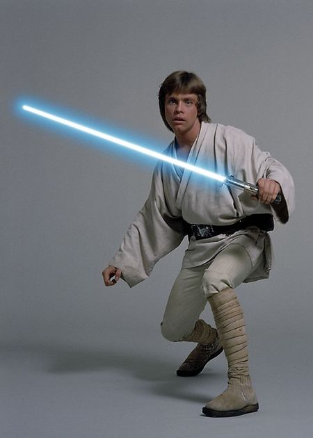
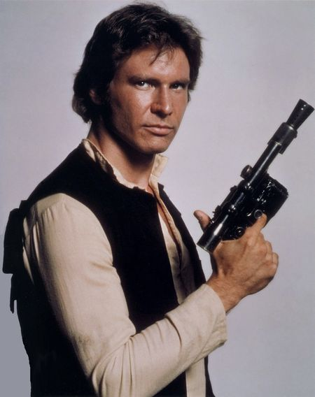
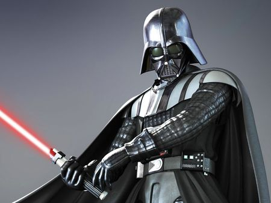
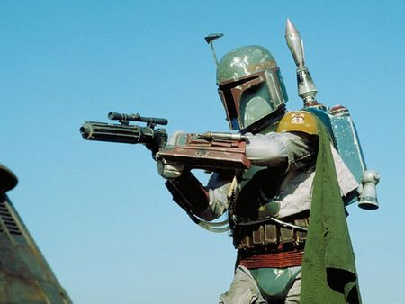

Герои
Люк Скайуокер
Соло – владелец "Тысячелетнего сокола", корабля, способного добраться до Дуги Кесселя за 12 парсек, что бы это ни значило. Соло говорит на языке вуки, или по меньшей мере с него переводит. Пока другие щеголяют в костюмах дзюдоистов или шерстяных капюшонах, Соло занят делом и не упускает ни одной выгодной сделки. Даже приквелы его не затронули: сцена, в которой юный Хан оттягивается на родине Чубакки, была исключена на стадии проработки концепта. Соло стоит особняком, он весел и беспечен, в отличие от разглагольствующих о высоких материях джедаев: "Малыш, я мотался по всей галактике и видел много странного. Но я никогда не видел ничего, что могло бы заставить меня поверить во всемогущую Силу, у которой все под контролем. К моей судьбе мистическое энергетическое поле отношения не имеет".
Хан Соло
Соло – владелец "Тысячелетнего сокола", корабля, способного добраться до Дуги Кесселя за 12 парсек, что бы это ни значило. Соло говорит на языке вуки, или по меньшей мере с него переводит. Пока другие щеголяют в костюмах дзюдоистов или шерстяных капюшонах, Соло занят делом и не упускает ни одной выгодной сделки. Даже приквелы его не затронули: сцена, в которой юный Хан оттягивается на родине Чубакки, была исключена на стадии проработки концепта. Соло стоит особняком, он весел и беспечен, в отличие от разглагольствующих о высоких материях джедаев: "Малыш, я мотался по всей галактике и видел много странного. Но я никогда не видел ничего, что могло бы заставить меня поверить во всемогущую Силу, у которой все под контролем. К моей судьбе мистическое энергетическое поле отношения не имеет".
Дарт Вейдер
Вейдер погружен в работу. Длинный черный плащ Вейдера держится на богатырских плечах бристольского тяжелоатлета Дэйва Проуза, Джеймс Эрл Джонс из штата Миссисипи одолжил злодею свой бас, заставляющий звучать веско не самые талантливые реплики ("Планы, о которых вы говорите, скоро снова будут в наших руках"), художник по костюмам Джон Молло соорудил для Вейдера блестящую черную маску – гибрид шлема штурмовика, головного убора самурая и противогаза. Дарт Вейдер и по сюжету, и визуально – настоящая ось Зла, вокруг которой вращается галактика, он превосходно уравновешивает олицетворяющего Добро затрапезного старичка в исполнении Алека Гиннесса. В "Звездных войнах" Вейдер даже не работает на Империю – он просто хочет устранить Оби-Вана и сделаться последним джедаем. Позднее, когда Лукас как следует продумал предысторию, Вейдер смог сделать величайшее признание всех времен и народов ("Я твой отец"), и в конце "Эпизода V /Star Wars: Episode V – The Empire Strikes Back/ (1980) поневоле задаешься вопросом: может, Люку и впрямь следует послать повстанцев подальше и присоединиться к папе, чтобы построить вместе с ним Империю? Финал "Возвращения джедая", в котором Вейдер снимает маску и оказывается небезнадежным парнем, почти добряком и херувимом, можно расценивать как ошибку Лукаса. С другой стороны, трилогия приквелов сильна именно тем, что позволяет прочувствовать, как Энакин становится готов надеть черный шлем в опустошающем финале "Мести ситхов".
Боба Фетт
Фетт не ищет Великого Зла. Он всего лишь убивает за пригоршню кредиток. Назвав его именно охотником за головами, а не наемником или киллером, Лукас имел в виду один из недавних и самых крутых архетипов кинематографа: эгоистичного антигероя, популярность которого стала следствием успеха спагетти-вестернов Серджо Леоне. Действительно, прорези для глаз на Т-образном визоре шлема Бобы Фетта чем-то напоминают острый стальной взгляд Клинта Иствуда и Ли Ван Клифа, да и бластер в сцене представления охотников за головами Фетт поглаживает так же, как Иствуд гладит револьвер в "долларовой трилогии". Каждое телодвижение Фетта выверено – актер Джереми Буллок знал, что делал. Уроженец графства Листер, сыгравший, кроме прочего, лакея Q в фильмах о Джеймсе Бонде с Роджером Муром, говорит, что, потея внутри костюма, он ни на секунду не забывал о фильмах Леоне. "Я играл Бобу, как если бы он был героем Клинта Иствуда в фильме "За пригоршню долларов", – сказал нам актер. – Это именно он, пусть и в броне. Я понял тогда, что чем меньше я двигаюсь, тем лучше. Боба Фетт знает, что делает. И всегда готов атаковать". Для Буллока вся роль сводилась к позам и движениям. Иначе и быть не могло: он знал, что его переозвучат (Джейсон Уингрин), хотя все равно проговаривал все реплики на съемках, но, увы, не совсем тем голосом, какой требовался режиссеру. Буллок с радостью рассказывает о том, что когда Фетт наблюдает за погрузкой окаменевшего тела Хана в его очаровательно уродливый корабль "Раб-1", актер на полном серьезе выпалил: "Поместите груз Соло в капитанский отсек!" (вместо "Поместите капитана Соло в грузовой отсек!") – и оплошность заметили только при просмотре чернового монтажа…